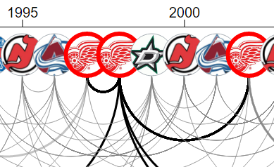
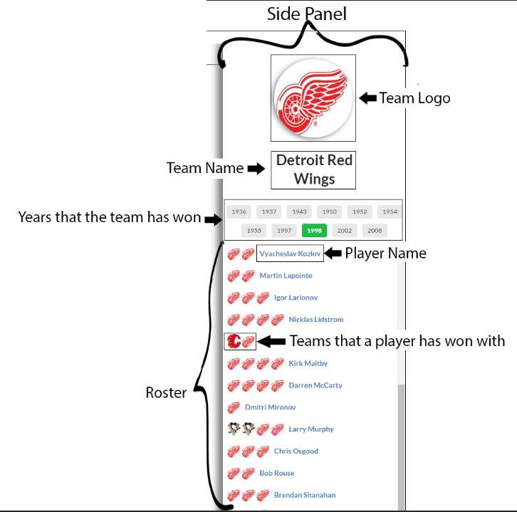

Stanley is a visualization of past Stanley Cup champions and the player relations between these winning teams.
Using the mouse, you can pan and zoom the axis and select teams.
Selecting a team will highlight the node in red and the arcs of the players in black that team shares with other Stanley Cup winning teams.

This side panel will show information on the selected team such as the logo, name, win years and the winning roster for the selected year.

You can hover over players in the roster to see their arcs highlighted in the diagram.
You can re-open this help panel any time by clicking on the 'Legend' button in the bottom left corner.